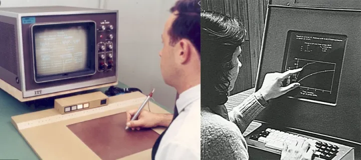
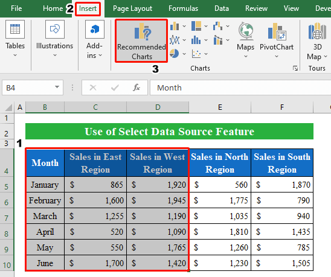
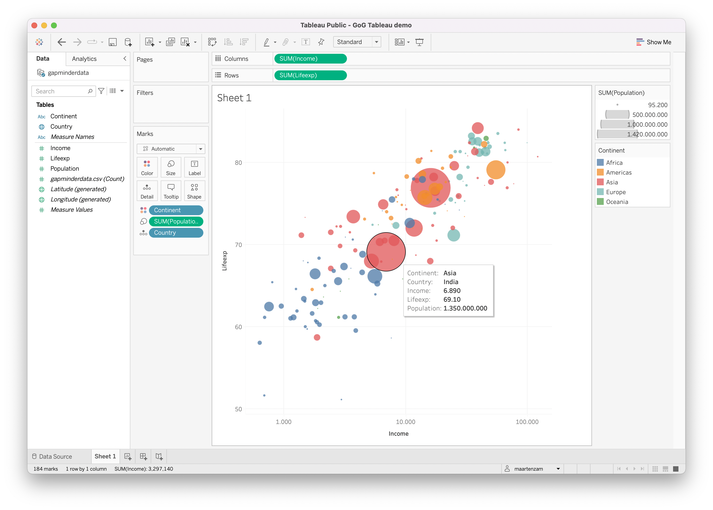
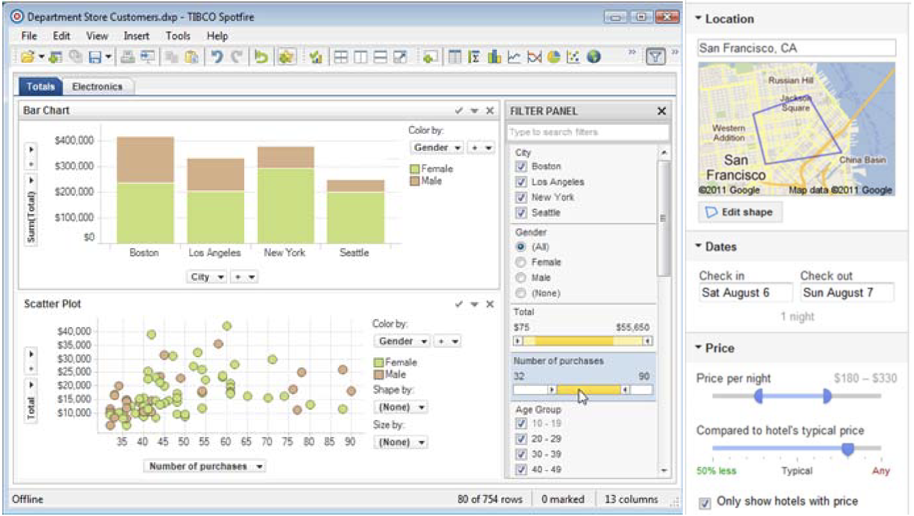
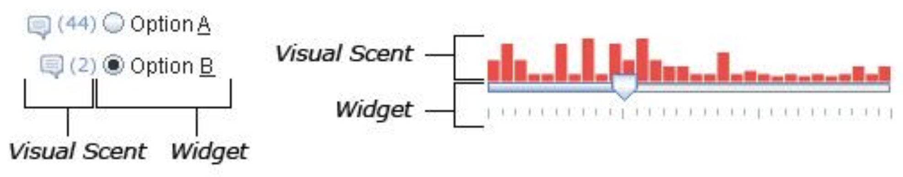
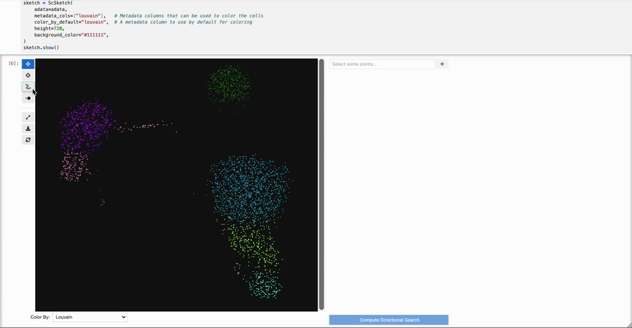
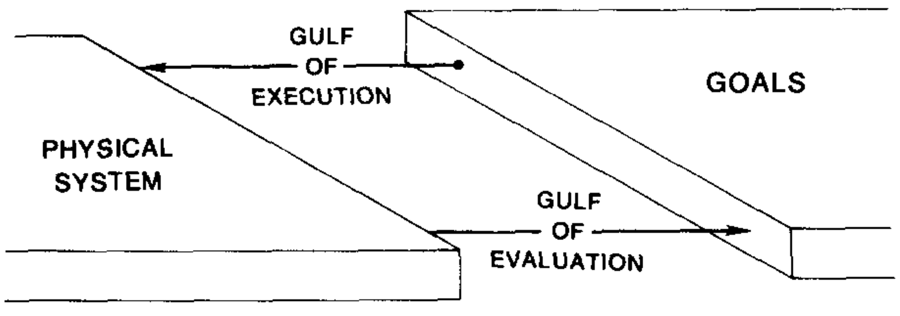

path = (p) => new URL(`data/${p}`, document.baseURI).href
// setup the data coordinator
vg = {
const vg = await import("https://cdn.jsdelivr.net/npm/@uwdata/vgplot@0.19.0/+esm");
const wasm = await vg.wasmConnector();
vg.coordinator().databaseConnector(wasm);
await vg.coordinator().exec([
vg.loadCSV("penguins", path("penguins.csv")),
vg.loadCSV("athletes_batched", path("athletes.csv")),
vg.loadCSV("movies", path("movies.csv"))
]);
return vg;
}Interactive Visualization - Part 1
Readings 1 (Sections 1 - 2), 2
History
Interactive visualizations are visualizations that respond to user input. We grew up with computers, so we might have gotten used to how extraordinary they are. But stepping back, consider that even though visualizations have been a part of scientific and public discourse for centuries, they were almost always static. The visualization designer was responsible for a particular data and view that would be broadcast verbatim to all their readers. A particularly ambitious team might prepare a few related visualizations mean to be viewed together, like an atlas. A few visionaries explored the idea of interactivity using mechanical devices, like the Bertin Loom.
These were impractical, but they set the stage for what was to come.
The situation changed dramatically with the arrival of computers in the 1970s - 1980s. Compared to print, computer displays can cheaply show many views in sequence. Through new interfaces, users could also direct the particular sequence that was shown to them. There might be thousands of options for what data, visual encodings, and annotation to include in a particular visualization. An well-designed interactive visualization lets users explore many options iteratively; they might traverse a path through the space of visualizations that no other reader has ever considered, one tailored to their particular interests.

Early tablet and touch screens source. In this sense, interactive visualizations put their users into conversation with the data. They are no longer passive viewers, but can pose questions and receive answers from their visualizations (a good interactive visualization should feel like an engaging conversation, exploring many avenues and going beyond superficialities).
There has since been an explosion of software tools for building interactive visualizations. But there are fundamental concepts that are shared across all these tools, both about interaction dynamics (so that the plots help users actually answer questions) and software design (so that the implementation is modular and logical).
Interaction Taxonomy: Data and View Specification
Heer and Shneiderman argue that, at a high-level, interaction dynamics in visualization can be categorized into three groups: (1) data and view specification, (2) view manipulation, and (3) analysis process and provenance. These notes focus on group (1), which can be further broken into four actions,
- Visualize: Decide on a set of visual encodings.
- Filter: Modify which samples are shown.
- Sort: Reorder where the the samples appear on the display.
- Derive: Introduce new variables to the display.
Basically, we can use interactivity to decide what data to show (data specification) and how we show it (view specification).
Visualize. From our study of static visualizations, we know that different visual encodings prioritize different comparisons. An interactive visualization that supports the “visualize” action allows the user to modify the encodings directly within the interface. This can be done through excel-style dropdowns,

but this is less expressive than a full grammar of graphics (e.g., we can’t overlay regression lines over a scatterplot). Alternatively, some systems allow particular encodings to be specified interactively. These are essentially interactive, code-free versions of ggplot2; the most famous example is tableau.

Filter. Filters allow users to query for particular subsets of the data. They can be specified through input widgets, like dropdown menus, sliders, radio buttons, or search bars.

A (too…) complicated interface that uses many filter inputs. Further, the filter input can itself be augmented by small visualizations, called scented widgets (because they give a “scent” about the information that can be “foraged” through a particular interaction).

Sort. Often the ordering of the datapoints can make a difference in the patterns that we perceive. The visualization below shows the relationships between characters in Les Miserables (we’ll study networks in much more depth later). Notice how many of the purple connections are collected in the same block when using the Bray Curtis, but not Euclidean, sorting option.
Derive. Finally, it’s possible to compute new variables based on interactive user queries. This is the least common form of interactive data/view specification, but it has a lot of potential, especially in data science, where statistical algorithms often return new numerical summaries related to the analysis. For example, we can fit a linear regression over a subset of interest, or compute \(p\)-values contrasting selected vs. unselected points, like in the plot below.

From the scSketch demo. Exercise: What was the last interactive visualization you saw before class? Did it use data and view specification? If so, what actions did it use? If not, did it support view manipulation or analysis process/provenance?
Gulfs, Constancy, and Memory
As we’ve seen above, interactivity opens up many possibilities for “conversing” with the data. But sometimes interactive visualizations are painful to use. What can go wrong?
One useful abstraction idea is that interactive systems must bridge the two interaction gulfs.
- Gulf of execution: The time it takes to specify a query and update the display.
- Gulf of evaluation: How long it takes to understand the updated display.
If either of the gulfs takes too long to cross, then the system starts becoming difficult to use. Updates that take less than 0.1 seconds feel smooth, between 0.1 and 1 second will have a noticeable lag but still support continuous train of thought. 10 seconds is generally considered the limit before users actively change their interaction behaviors.

Animation can help reduce the gulf of evaluation. Instead of having to manually scan plot labels or marks to see how it has changed, we can follow the same object as it transitions between views. For example, the plot below shows the population breakdown of different states according to age groups. It’s easy to see which states had stable rankings.
It’s important that the transitions track the same object. For example, it makes no sense to transition between views showing different datasets. Further, if there is very little shared between two adjacent views, then the animations can become hard to follow.
This highlights the basic tradeoff between static and interactive visualization. While interactive visualization allows us to explore many related views, it relies heavily on memory. In contrast, a small multiples plot doesn’t place as much burden on memory, but don’t scale well to many views. This basic trade-off is summarized by Tamara Munzner’s rule of thumb: “eyes beat memory.” We should only use interactivity when it’s not possible to gather the same insights from a static view.
Mosaic
The basic challenge in programming interactive systems is that different parts of the code need to be rerun on demand as the user sends new inputs. This is different from traditional computer programs, which execute code from the top to the bottom of a file, and is often called “reactive programming,” because the program’s state reacts to user inputs.
We’ll discuss how Mosaic monitors for user interactions and triggers updates to the visualization. First, let’s setup a database with the datasets we’ll use in our illustrations below.
Param and Selection
- In mosaic,
Paramsare used for interactive view specification. They are the link between user inputs and the visual rendering code that needs to be rerun based on the user input. For example, the scatterplot below allows us to change point color using a menu. The user can provide inputs throughvg.menu. Thevg.dotlayer uses whatever color is passed to thefillargument.$colorappears in both thevg.menuandvg.dotcode is and ensures the visualization is rerendered every time the input changes.
color = vg.Param.value("red")
menu = vg.menu({as: color, options: ["red", "blue", "green"], label: "Point color"})
plot = vg.plot(
vg.dot(
vg.from("penguins"),
{x: "bill_length_mm", y: "bill_depth_mm", fill: color}
),
vg.width(500),
vg.height(300)
)
vg.vconcat([menu, plot])- In this example,
Paramsimply controls the view and never refers to the underlying dataset. If instead we want to use interactivity for data specification, we need to use mosaic’sSelectionobject. LikeParam, this serves as a link between user inputs and visual rendering. However, theSelectionobject can query the underlying database. For example, we can filter to different species using thefilterByargument offrom.
species = vg.Selection.single()
species_menu = vg.menu({as: species, from: "penguins", column: "species", label: "Species"})
species_plot = vg.plot(
vg.dot(
vg.from("penguins", {filterBy: species}),
{x: "bill_length_mm", y: "bill_depth_mm"}
),
vg.xDomain([30, 60]), // keeps the window ranges fixed
vg.yDomain([12, 22]),
vg.width(500),
vg.height(300)
)
vg.vconcat([species_menu, species_plot])- Filtering completely removes points from the plot. We can instead highlight one group and fade the rest into the background using
vg.highlight. This again requires aSelectionobject, because we need to refer to the underlying data.
species2 = vg.Selection.single()
species_menu_2 = vg.menu({as: species2, from: "penguins", column: "species", label: "Species"})
species_plot_2 = vg.plot(
vg.dot(
vg.from("penguins"),
{x: "bill_length_mm", y: "bill_depth_mm"},
),
vg.highlight({by: species2, opacity: 0.1}),
vg.width(500),
vg.height(300)
)
vg.vconcat([species_menu_2, species_plot_2])We can also combine several user inputs into the same selection. For example, below we have one menu for species and another for island, and they both point to the same
Selectionobject. Mosaic defines a few ways to reconcile the competing user inputs.vg.Selection.intersect(): Consider only samples that pass both conditions.vg.Selection.union(): Consider samples that pass either condition.vg.Selection.single(): Consider samples that pass the condition that was most recently changed by the user.
filter = vg.Selection.intersect()
species_menu_3 = vg.menu({as: filter, from: "penguins", column: "species", label: "Species"})
island_menu = vg.menu({as: filter, from: "penguins", column: "island", label: "Island"})
species_island_plot = vg.plot(
vg.dot(
vg.from("penguins"),
{x: "bill_length_mm", y: "bill_depth_mm", fill: "species"}
),
vg.highlight({by: filter, opacity: 0.1}),
vg.xDomain([30, 60]),
vg.yDomain([12, 22]),
vg.width(500),
vg.height(300)
)
vg.vconcat([vg.hconcat([species_menu_3, island_menu]), species_island_plot])Exercise: For the settings below, decide whether it is more appropriate to use a Param or a Selection.
- You plan to overlay a 2D density on a scatterplot and would like a slider that allows the user to adjust the bandwidth.
- You are creating a map of study spots on campus and want to filter to those that have separate rooms for conversation.
- You have a scatterplot of tree height vs. canopy size and want to use a search box to highlight those within a given taxonomic group.
- You want to give users the option to report your measurements in either mm or cm using a button.
Inputs
Menus are just one way that the user can provide inputs. Mosaic package implements,
These work with both
ParamandSelectionobjects. For example, we can change point sizes using aParamobject.
size = vg.Param.value(5)
size_slider = vg.slider({as: size, min: 1, max: 25, label: "point size"})
size_plot = vg.plot(
vg.dot(
vg.from("penguins"),
{x: "bill_length_mm", y: "bill_depth_mm", r: size}
),
vg.width(500),
vg.height(300)
)
vg.vconcat([size_slider, size_plot])We can alternatively use a slider to highlight samples with flipper sizes below a certain value.
flipper_selection = vg.Selection.single()
flipper_slider = vg.slider({as: flipper_selection, from: "penguins", column: "flipper_length_mm", select: "interval", label: "Flipper length"})
flipper_plot = vg.plot(
vg.dot(
vg.from("penguins"),
{x: "bill_length_mm", y: "bill_depth_mm"}
),
vg.highlight({by: flipper_selection, opacity: 0.1}),
vg.width(500),
vg.height(300)
)
vg.vconcat([flipper_slider, flipper_plot])The arguments to slider are more complicated now because we have to refer to the flipper_length_mm column of the dataset.
as: TheSelectionobject. This ties the user inputs to rendered visual changes.from: Which dataset do we draw the query from?column: Which column of the dataset do we use when defining the query?select: Should we keep only the rows whereflipper_length_mmequals the slider value? Or anything up to this value?
- This is an example table selection. We create a table based on the
penguinsdata. We draw two layers of dots, one grey and another red. If we hover over a row in the table, then we filter the red layer to show only the hovered penguin.
table_selection = vg.Selection.single()
// define the table input
penguin_table = vg.table({
as: table_selection,
from: "penguins",
columns: ["species", "island", "bill_length_mm", "bill_depth_mm", "flipper_length_mm"]
})
// Define the plot from two dot layers (background and foreground)
table_plot = vg.plot(
vg.dot(
vg.from("penguins"),
{x: "bill_length_mm", y: "bill_depth_mm", fill: "#CDB4BB", r: 2}
),
vg.dot(
vg.from("penguins", {filterBy: table_selection}),
{x: "bill_length_mm", y: "bill_depth_mm", fill: "#7D323D", r: 3}
),
vg.width(500),
vg.height(300)
)
vg.vconcat([table_plot, penguin_table, vg.vspace(10)])\(^\dagger\) By default, the menu, slider, and table inputs aren’t really that pretty. But you can customize their appearance using Cascading Style Sheets (CSS). The mechanics are beyond the scope of our course, but there are many CSS templates available freely online to customize the appearance of your inputs. For example, the top search result for “css table templates” brought me to this site, whose code I copied to make the tables in these notes prettier (a few minor modifications are commented on below).
```{=html} <style> table { /* change ".table-hover" to "table", so the rule applies to every table */ width: 100%; border-collapse: collapse; font-family: sans-serif; font-size: 0.9rem; } table thead th { padding: 12px 15px; background-color: #f4f4f4; box-shadow: inset 0 -2px 0 #ccc; text-align: left; position: sticky; /* always show header at the top */ top: 0; } table td { padding: 12px 15px; border-bottom: 1px solid #e0e0e0; } table tbody tr:hover { background-color: #f5f5f5; } /* pad the text around menus */ .input { margin-right: 1em; } .input > * { vertical-align: middle; } .input label:first-of-type { margin-right: .5em; } </style> ```\(^\dagger\) Mosaic is designed to fit into the wider javascript visualization ecosystem1 and it actually is not hard to connect it to other packages. For example, we may want to have access to a wider catalog of inputs, like those implemented in Observable JS, which support multi-checkbox and date inputs.
Similarly, some open source programmers release libraries for specific use cases, like range sliders or geographic brushes.
\(^\dagger\) Even though they’re not built in, it’s possible to connect these custom inputs with mosaic. The key observation is that, under the hood, the built-in inputs (e.g.,
vg.menuandvg.slider) are defining SQL filter statements from the input value. These statements are passed toSelectionobjects that allow the visualization to show different data subsets. So to use custom inputs, we need a way to update theSelectionobjects to point to the right rows. This was anticipated by the mosaic developers, and every selection provides an.updatemethod. Abstractly, it has the form,selection.update({ source: input object value: javascript variables created by the input predicate: SQL expression defining which rows to select })We will illustrate using both checkbox inputs and range sliders.
\(^\dagger\). Checkboxes are useful if we want to select multiple species in our scatterplot. This isn’t supported by
vg.menu, but it is supported byInputs.checkboxfrom the Observable library, which is automatically loaded by quarto. To define an Observable checkbox input in this package, we can use this syntax.
penguin_checkbox = Inputs.checkbox(
["Adelie", "Gentoo", "Chinstrap"], // options
{label: "Species", value: ["Adelie", "Gentoo", "Chinstrap"]} // label and initial values
);The associated selection.update code is placed in a listener that is run anytime the checkbox is clicked. In this special case of the selection.update pattern, source is the checkbox input, value is an array of currently selected species, and predicate transforms that array into a SQL filter command.
species_check = vg.Selection.single();
penguin_checkbox.addEventListener("input", () => {
const current = penguin_checkbox.value; // e.g., ["Adelie", "Gentoo"]
species_check.update({
source: penguin_checkbox,
value: current,
predicate: vg.sql`species IN (${current.map(vg.literal)})`
});
});We can now use the modified selection within our visualization layers as if checkbox inputs were built into the mosaic library.
checkbox_plot = vg.plot(
vg.dot(
vg.from("penguins", {filterBy: species_check}),
{x: "bill_length_mm", y: "bill_depth_mm"}
),
vg.xDomain([30, 60]), // keeps the window ranges fixed
vg.yDomain([12, 22]),
vg.width(500),
vg.height(300)
)
vg.vconcat([penguin_checkbox, checkbox_plot])- \(^\dagger\). Here’s another example. Suppose instead of simply selecting penguins with flipper length below a given value, we wanted to identify those with flipper length within a given range. This isn’t supported by the default
vg.slider, but it’s supported by this range slider widget. Let’s import it using the command given on that webpage.
import { interval } from "@mootari/range-slider"The block below defines the slider object, just like we defined the checkbox output above.
flipper_range_slider = interval([170, 235], { // min and max range
label: "Flipper length",
value: [170, 235], // initial values
format: ([lo, hi]) => `${Math.round(lo)} - ${Math.round(hi)}` // hide decimals
})In this selection.update(), we can use the [lo, hi] pair that’s saved by the slider every time its values are changed. the vg.isBetween command is a helper that automatically constructs a SQL filter based on minimum and maximum values.
flipper_range = vg.Selection.single();
flipper_range_slider.addEventListener("input", () => {
const [lo, hi] = flipper_range_slider.value;
flipper_range.update({
source: flipper_range_slider,
value: [lo, hi],
predicate: vg.isBetween("flipper_length_mm", [lo, hi])
});
});We can highlight the penguins within the selected range as if it were an ordinary vg.slider input.
flipper_range_plot = vg.plot(
vg.dot(
vg.from("penguins"),
{x: "bill_length_mm", y: "bill_depth_mm"}
),
vg.highlight({by: flipper_range, opacity: 0.1}),
vg.width(500),
vg.height(300)
)
vg.vconcat([flipper_range_slider, flipper_range_plot])Examples
Athlete Heights
- The example below comes from the mosaic documentation and shows how confidence intervals become narrower when we have more samples. It illustrates this by computing a confidence interval for the height of athletes within each sport. Let’s take a look at the original data. The batch column is defined so that, within each sport, every 10 rows gets labeled with a new batch number.
athletes_preview = vg.coordinator().query("SELECT * FROM athletes_batched")
Inputs.table(athletes_preview)The visualization has two slider inputs.
querycontrols aSelectionthat filters rows with less then the specified batch number. When a smaller dataset is passed into theerrorbarXlayer, the associated error bars get wider.cicontrols aParamgoverning the confidence level. Confidence levels that are larger (e.g., 99%) require wider intervals, but this doesn’t reference the underlying data, so we can get away with aParam.
ci = vg.Param.value(0.95)
query = vg.Selection.single()
vg.vconcat(
// user inputs
vg.slider({ select: "interval", as: query, column: "batch", from: "athletes_batched", label: "Max Samples" }),
vg.slider({as: ci, min: 0.5, max: 0.999, step: 0.001, label: "Conf. Level"}),
// graphical encodings
vg.plot(
vg.errorbarX(
vg.from("athletes_batched", {filterBy: query}),
{ci: ci, x: "height", y: "sport"}
),
vg.xLabel("Height"),
vg.marginLeft(120), // keep labels visible
vg.width(500),
vg.height(400)
),
vg.colorLegend({for: "heights"}),
)Movie Ratings
Let’s work through another example inspired by the classic FilmFinder visualization. The entire app is given in the block below. We’ve written two helper functions,
movie_controlsandmovie_plot,to support the interactivity and graphical encodings, respectively. The use case of the app is relatively simple, but it already reveals some interesting patterns. For example, dramas tend to have higher ratings than horror. Also, what do you think is going on with the fact that movies released before 1995 seem to have higher ratings in general?
movie_query = vg.Selection.intersect();
vg.vconcat(
movie_controls(movie_query),
movie_plot(movie_query)
);Let’s study those two functions.
movie_controlsdefines the three user interface inputs. Thefromargument tells us to always look at themoviesdataset in our database.columnsays which column should be used to define the selector. The argumentqueryis avg.Selection.intersect()object. This ensures that only the movies that satisfy all these selections will be returned from the database.Exercise: What would happen if we had used
vg.Selection.single()instead? What aboutvg.Selection.union()?
function movie_controls(query) {
return vg.hconcat(
vg.menu({
as: query,
from: "movies",
column: "Major_Genre",
value: "Drama",
label: "Genre"
}),
vg.menu({
as: query,
from: "movies",
column: "MPAA_Rating",
label: "MPAA Rating"
}),
vg.slider({
as: query,
from: "movies",
column: "year",
min: 1928,
max: 2046,
select: "interval",
value: 2020,
step: 1,
label: "Released Through"
})
);
}- The function below draws the actual plot. Notice that we have two dot layers. The first shows everything in a faint background, and the second shows those that pass the query. The
tip: truecall ensures that we can see the movie title when we hover our mouse near the highlighted point.
function movie_plot(query) {
return vg.plot(
vg.dot(vg.from("movies"), {
x: "Rotten_Tomatoes_Rating",
y: "IMDB_Rating",
r: 1.5,
fill: "#CDB4BB"
}),
vg.dot(vg.from("movies", {filterBy: query}), {
x: "Rotten_Tomatoes_Rating",
y: "IMDB_Rating",
r: 3,
fill: "#7D323D",
title: "Title",
tip: true
}),
vg.xyDomain(vg.Fixed),
vg.xLabel("Rotten Tomatoes Rating"),
vg.yLabel("IMDB Rating"),
vg.width(680),
vg.height(400)
);
}Footnotes
For this reason it’s a good gateway to more advanced libraries like D3.↩︎